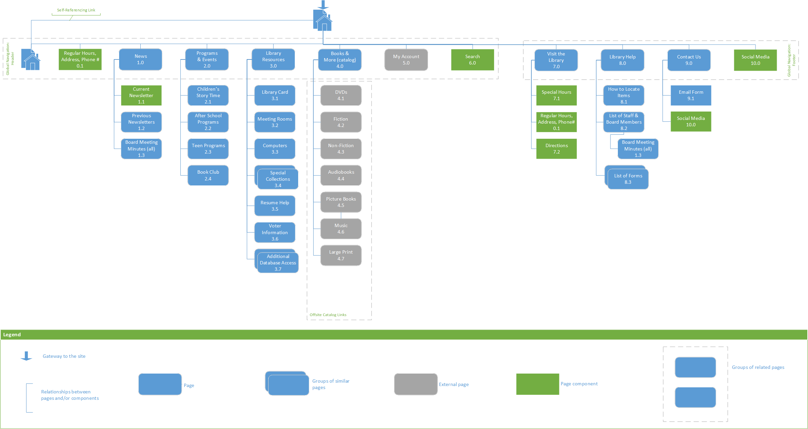

Library Website Redesign
actions:
I knew that I needed to understand first, who the library was supposed to be serving and then second, review the information architecture for myself - before I could propose any solution.
Techniques Used:
- Initial Website Review to evaluate the current style and information architecture of the website.
- Ethnographic interviews to experience librarian's interactions with their patrons and understand the types of patrons they serve.
- Persona development to understand library patrons and their motivations.
- Style guide evaluation and update.
- Information architecture review and revision.
What I Did:
I arranged some time with my local librarians to complete some research into understanding how the Upper Sandusky Community Library may have been functioning and who its primary patrons were.
Once I'd finished my initial round of research, I worked on developing persona primary and secondary personas for the primary library users.
After I developed the personas, I evaluated what tasks they would be most likely to participate in, and created a matrix to display that information for ease of comparing motivations between personas.
From persona development and task comparison, I moved to evaluate the current information architecture and develop a strategy behind the website's organization to inform the navigation structure and future content additions.
Proposed Sitemap:
Proposed Navigation Structure:
After exploration of different navigation structures, I proposed that a hybrid topical and task-based organization scheme (with some audience-specific content) would work best for the Upper Sandusky Community Library’s redesigned website. According to user research, most library patrons want to:
- find when the library is open,
- place a hold for a book,
- renew an already checked out resource that is approaching its due date,
- download an e-book,
- register for events, and
- search the catalog.
Since the library patrons' needs are varied, a hybrid organization scheme remains the best option for the website.
The challenge with a hybrid organization scheme is to keep each topic or task large enough to contain more than one page, but small enough to not require the user to have to search through multiple pages to find what information they seek. This challenge can be met with multiple entry points to the same page; however, the duplicated entry points must make sense, and should not be so superfluous as to be difficult to maintain all the references.
When new content is needed, first determine if existing content should be repurposed to include the new content and if a new page is needed, reference the above user tasks and the site map/blueprint to determine the best fit for the new content.
← Go back to review the library's problem.
My proposed solution, is next →.